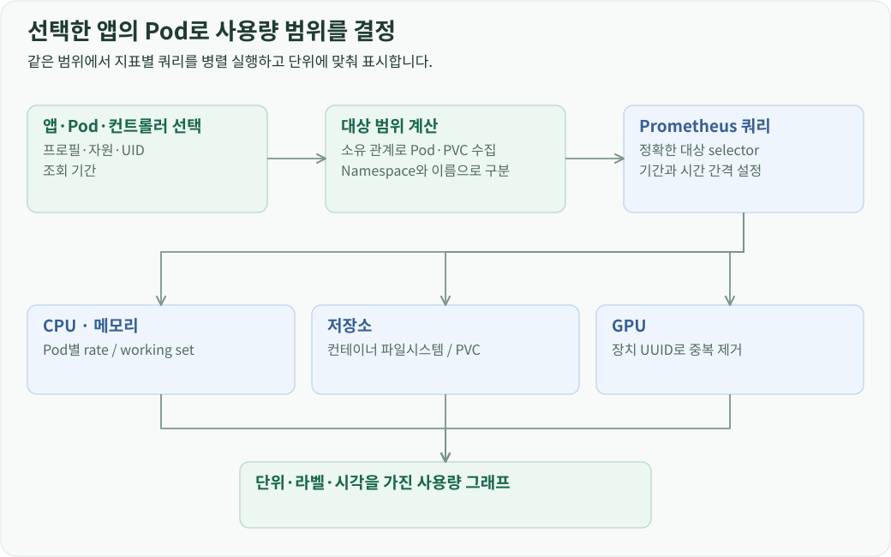
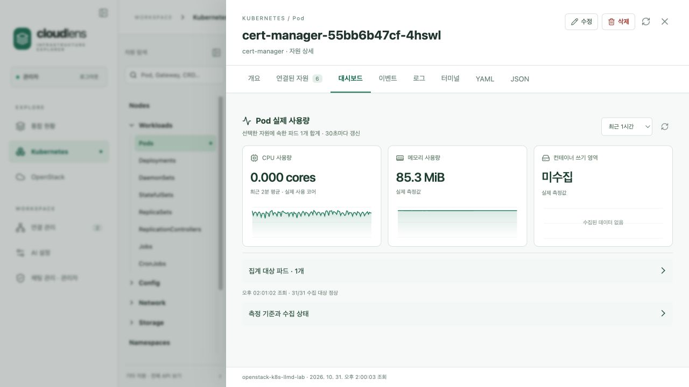
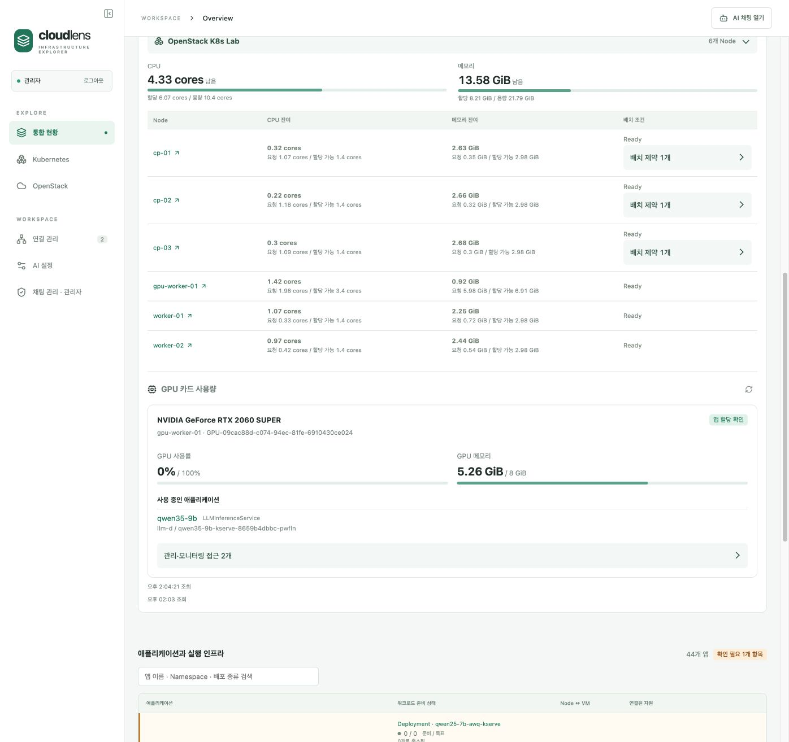

개요
앱 사용량 대시보드는 자원 관계에서 대상 Pod를 구하고, 그 Pod 집합으로 Prometheus 조회 범위를 제한합니다. 통합 현황의 앱 대시보드와 Pod·컨트롤러 상세의 대시보드가 같은 집계 경로를 사용합니다.
선택한 자원을 Pod 집합으로 변환
화면은 연결 프로필, 자원 종류, Namespace, 이름, 예상 UID와 조회 기간을 API로 보냅니다. 서버는 실제 자원의 UID를 확인한 뒤 조회 범위를 계산합니다.
Pod를 선택하면 그 Pod가 범위가 됩니다. Deployment·StatefulSet 같은 컨트롤러를 선택하면 소유 관계를 따라 하위 Pod를 모읍니다. 앱을 선택하면 앱 구성 그래프에서 워크로드와 그 하위 Pod, PVC, 배치된 노드, GPU 참조를 가져옵니다.

Pod 이름은 Namespace별로 묶습니다. 서로 다른 Namespace에 같은 이름의 Pod가 있어도 각각의 (Namespace, Pod 이름) 조합으로 쿼리를 만듭니다. 이름을 정규식에 넣을 때는 특수 문자를 이스케이프하고 시작·끝을 고정해 정확히 해당 Pod만 선택합니다.
지표마다 다른 집계식 적용
백엔드는 지표별로 정해진 PromQL에 대상 selector와 조회 기간을 넣습니다. Prometheus는 등록된 Kubernetes Service의 proxy 경로로 접근하며, 응답의 라벨과 시계열을 공통 그래프 형식으로 변환합니다.
| 지표 | 수집 값 | 계산과 묶음 기준 |
|---|---|---|
| CPU | container_cpu_usage_seconds_total |
2분 구간의 rate를 구하고 Namespace·Pod별 합산, 단위는 cores |
| 메모리 | container_memory_working_set_bytes |
컨테이너 값을 Namespace·Pod별 합산 |
| 컨테이너 파일시스템 | container_fs_usage_bytes |
Namespace·Pod별 사용 바이트 합산 |
| PVC 사용량·용량 | kubelet_volume_stats_used_bytes, capacity_bytes |
Namespace·PVC별 값으로 표시 |
| GPU 사용률 | DCGM_FI_DEV_GPU_UTIL |
장치 UUID·호스트·모델별로 묶어 표시 |
| GPU 메모리 | DCGM_FI_DEV_FB_USED, TOTAL, RESERVED |
MiB를 바이트로 변환하고 같은 장치의 중복 시계열 제거 |
CPU·메모리 쿼리는 Pod 인프라 컨테이너와 이름이 빈 컨테이너를 제외합니다. GPU는 장치 UUID를 기준으로 max 집계를 사용합니다. 하나의 카드가 여러 소비자 라벨로 노출되어도 같은 카드의 수치가 반복 합산되지 않도록 한 것입니다. 화면은 카드 단위 지표와 그 카드를 참조하는 앱을 함께 표시합니다.


조회 기간과 요청 비용 제어
조회 기간에 맞춰 시계열 간격을 바꿉니다. 15분 조회는 15초, 1시간은 30초, 6시간은 2분, 24시간은 5분 간격으로 요청합니다. 종료 시각을 이 간격에 맞춰 정렬하면 같은 기간을 연속 조회할 때 동일한 구간을 재사용할 수 있습니다.
자원에서 Pod 집합을 구한 결과는 사용자·프로필·자원·UID를 키로 45초 동안 캐시합니다. 대시보드 결과는 같은 대상과 모니터링 설정·조회 기간을 키로 12초 동안 캐시합니다. 지표 요청은 최대 4개씩 병렬 실행해 CPU, 메모리, 저장소, GPU 쿼리를 처리합니다.
시계열 응답과 화면 상태
응답에는 각 지표의 단위, 라벨, 시간별 값과 함께 조회 시작·종료 시각, 간격, 대상 범위가 들어갑니다. 프론트엔드는 이 값을 그래프 축과 범례에 사용합니다.
시계열에 들어 있는 비정상 수치와 유한하지 않은 값은 null로 변환해 그래프의 빈 구간으로 표시합니다. 지표별 조회 결과를 따로 처리하므로 특정 지표 요청이 실패해도 나머지 그래프는 표시됩니다. Prometheus의 up 지표에서 얻은 수집 대상 상태도 응답에 포함해 대시보드의 수집 상태를 갱신합니다.